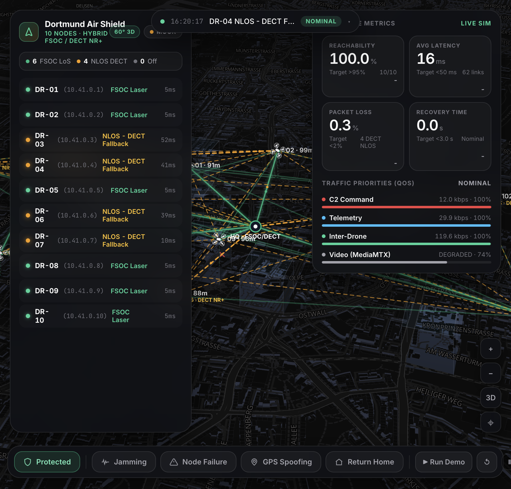

Dortmund OFF-Grid Air
A resilient 10-drone hybrid 1550 nm FSOC Laser + 1.9 GHz DECT NR+ mesh over 3D Dortmund — powered by real-world aerospace & RF physics, Autonomous INS/VIO Vertical Pop-Up, and Contrastive Threat Intelligence.

Hybrid FSOC Laser + 1.9 GHz DECT NR+
True 3D Dortmund building raycasting (`22–100 m`), 3 s hysteresis, `120 m` High-Altitude Relay drones (`DR-01`, `DR-02`), and $1/r^2$ Shannon-Hartley RF jamming physics.
Honest Double-Fail → Vertical Pop-Up (`INS/VIO`)
When trapped inside the `<150 m` Jammer Core behind the `95 m` U-Tower, the drone climbs `50 m → 125 m` on onboard INS/VIO to clear the roof in `3.2 s`.
Contrastive Prototypes + LLM Analyst CoPilot
Detects slow-ramping attacks in `0.0 s` (vs `9.5 s` rule-based), flags novel attacks as `UNEXPLAINED` for 1-click online learning, and explains downstream via LLM.
In a City Under Attack, Drones Go Dark in Three Ways That Stack
A single-band 2.4 GHz fleet or a flat-map mesh fails the moment concrete, broadband RF jamming, and stealth spoofing combine.
Concrete Eats the Laser
Free-Space Optical (FSOC 1550 nm) gives gigabit speed and total RF jammer immunity—but stops dead at the first solid facade.
- Dortmund urban blocks are 22–28 m, while key towers reach 74–100 m (RWE Tower 100 m, Dortmunder U-Tower 95 m, Ellipson 76 m).
- When a drone drops to 50 m in an urban canyon, its optical Line-of-Sight to HQ hits concrete.
Jammers Eat the Radio
The RF link that penetrates walls is the exact link an electronic warfare jammer is built to destroy.
- Broadband jammers in Sector West flood 2.4 GHz Funk and GNSS L1 satellites.
- Inside the <150 m Jammer Core behind a tall building, both optical LoS and RF fallback are simultaneously severed.
Slow Ramps Boil Rule Detectors
Spoofers nudge GPS at 1.5–7 m/s while ramping jammers climb at +1.55 dB/s.
- Rolling-window rule detectors absorb slow ramps into their moving baseline—staying blind for 9.0 to 9.5 seconds.
- Hardcoded rules misclassify novel multi-vector attacks instead of admitting uncertainty.
Two-Tier 3D Airspace & Distance-Based Jamming Physics
Every 200 ms, the simulation computes 3D raycasts with a 3-second hysteresis timer and applies inverse-square ($1/r^2$) jammer attenuation.
| Physical Condition | 3D Geometry & Distance | Protected (`FSOC + DECT NR+`) | Unprotected (`2.4 GHz Funk`) |
|---|---|---|---|
| 1. Clear 3D Line-of-Sight Even inside active RF Jamming |
Cruise `85–105 m` & High-Alt Relays `DR-01`/`DR-02` at `120 m` | FSOC 1550nm LASER 0% packet loss & 100% RF jammer immunity (optical photons ignore RF noise) | FUNK JAMMED · RIP 2.4 GHz collapses inside jammer radius |
| 2. NLOS Building Shadow + Outer Jam Zone e.g. `DR-07` at `52 m` behind Ellipson (`76 m`) |
`> 150 m` from jammer center ($1/r^2$ attenuation) | QoS EMERGENCY MODE DECT NR+ (1.9 GHz) survives via FHSS/DSSS: Video shed to `0%`, `+40 ms` latency, `12 kbps` C2 locked (`ONLINE · Degraded`) | CUT OFF Blocked by concrete + jammed; video starves C2 |
| 3. NLOS Building Shadow + Inner Jam Core e.g. `DR-03` at `50 m` behind U-Tower (`95 m`) |
`< 150 m` from jammer center + roof > drone Z | ISOLATED → POP-UP (INS/VIO) Honest double-fail! Switches to onboard INS/VIO and climbs vertically to `125 m` to clear roof | TOTAL LOSS Stranded behind building with zero recovery |
| 4. GNSS L1 Spoofing Drift Counterfeit satellite fix (`~7 m/s` pull) |
1.5× Sector West radius | INS PLAUSIBILITY GATE Rejects fake GNSS fix once offset exceeds `60 m`; airframe holds true orbit | HIJACKED Autopilot follows counterfeit ghost coordinates |
Double-Fail & Autonomous Vertical Pop-Up (`INS/VIO`)
When `DR-03` (`50 m`) is behind the `95 m` Dortmunder U-Tower and inside the `<150 m` Jammer Core, no radio can physically pass. So the drone uses geometry to heal the network.
Laser Blocked + DECT Jammed
`DR-03` is at `50 m` AGL, `53 m` from the jammer core behind the `95 m` U-Tower. Both 1550 nm laser and 1.9 GHz DECT NR+ fail. Status turns pulsing purple/red: `ISOLATED`.
Zero-RF / Zero-GPS Autonomy
After `1.5 s` isolated, `DR-03` switches navigation to onboard Inertial / Visual Odometry (`INS/VIO`) and initiates an automatic vertical climb (`22.5 m/s`).
`↑ CLIMBING TO CLEAR LOS`
Altitude climbs live in telemetry from `50 m → 96 m → 125 m`. At `96 m`, the drone physically rises above the `95 m` U-Tower roofline.
High-Altitude Relay Lock (`120 m`)
3D Line-of-Sight to High-Altitude Relay `DR-01` (`120 m`) is unobstructed! The green FSOC 1550 nm laser locks back on with 0% RF loss.
Occluded by 95 m Dortmunder U-Tower & inside <150 m jammer core.
Clears U-Tower roof and links via optical relay `DR-01` / `DR-02` (`120 m`).
Exact physical climb duration recorded live in the Resilience Scorecard.
Deterministic Math Detects in 0.0 s · The LLM Explains & Acts
Per-drone 4D nominal prototypes `(RSSI, SNR, Loss, GNSS-INS Offset)` catch slow ramps instantly, refuse to guess on novel signatures (`UNEXPLAINED`), and learn online in one click.
Contrastive Prototype vs. Rule-Based Detector
| Metric / Scenario | Rule-Based | Contrastive (Ours) |
|---|---|---|
| Nominal Flight False Flags | 0 | 0 False Flags |
| Ramping Jammer (+1.55 dB/s) | 9.5 s delay | 0.0 s (Instant) |
| Slow GNSS Spoof Drift | 9.0 s delay | 0.0 s (Instant) |
| Novel Attack (Pass 1 → Pass 2) | Misclassified | UNEXPLAINED → 100% @ 0.0s |
Run: python3 -m backend.engine.threat_eval --json threat_eval.json (19/19 unit tests pass)
Downstream LLM Security Analyst CoPilot
- The LLM never detects: All anomaly gating (`z ≥ 3.8`) and prototype attribution (`cos ≥ 0.84`) happen in deterministic, sub-millisecond Python/JS math.
- 1-Click Online Prototype Learning: When a novel multi-vector attack (`coordinated_rf_gnss`) appears, the operator clicks `Confirm Threat` (`learn_threat()`), storing its 4D unit direction vector immediately.
- Actionable German CoPilot Output: Consumes the structured verdict + 4D evidence window and outputs a German situational briefing, `LOW/MED/CRIT` operator issue, and 1-click engine command buttons (`SET_PROTECTION`, `SAFE_RETURN_HOME`).
Let’s Break the Network Live Over 3D Dortmund
We will now switch to the live terminal and execute these four exact steps in real time.
Unprotected 2.4G Collapse
Toggle `Unprotected · 2.4G Funk` (`P`) + `Jamming` (`J`). Watch cyan links collapse (`Funk Jammed · RIP`) and Reachability plummet.
`DR-07` QoS Emergency Mode
Switch to `Protected`. Behind Ellipson (`>150 m` jam zone), `DR-07` holds DECT NR+ FHSS, drops Video to `0%`, and locks `12 kbps` C2.
`DR-03` Vertical Pop-Up
Inside the `<150 m` Jammer Core behind the `95 m` U-Tower, `DR-03` goes `ISOLATED`, climbs `50 m → 125 m` on INS/VIO, and locks FSOC onto `DR-01` (`120 m`) in `3.2 s`!
Contrastive Learn + LLM
Click `🎯 Coordinated RF+GNSS` → see `⚠ UNEXPLAINED` → click `+ Confirm Threat` → instant `0.98` attribution + German LLM CoPilot actions.